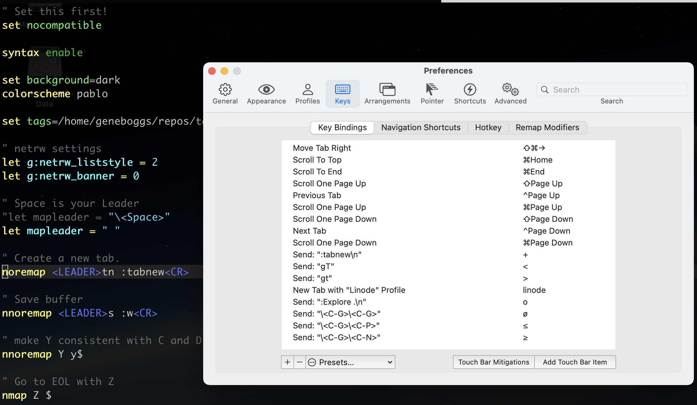
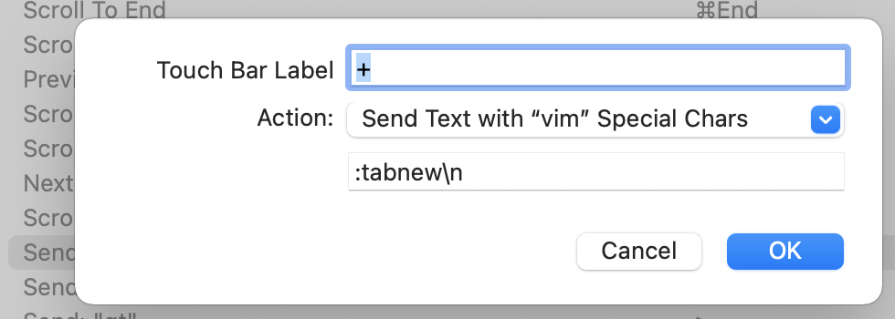

iTerm2, vim and the Apple Touch Bar
This post is about using the Apple Touch Bar with iTerm2, when in vim.
Some context:
I use vim constantly whether on my home Linux machine, my work Mac, or whatever server I happen to be ssh'd into.
I ignore the Touch Bar for the most part in general.
I like double espressos, but I digress.

If you open iTerm2 and go to the "Keys" then "Key Bindings" preferences, you will see table of actions and mapped keystrokes. These are things like "Scroll To End" maps to the Apple command key + End. Anyway, we want to add new Touch Bar items. So click the magical "Add Touch Bar Item" button. This opens a dialog that allows you to specify many many actions. We want to choose the 'Send Text with "vim" Special Characters' action, and then type exactly what you would type in to vim for an action, but with a couple extra bits: 1. Escape the less-than symbol (<) with a backslash (\). 2. Use the character sequence "\n" instead of "<CR>" to mean newline. These special characters are listed on the iTerm2 docs.

By the way, any vim key-combos (like "gT" to switch tabs) or even custom .vimrc maps are fair game here, too!
After you have these in place, you add them by opening the View menu item called "Customize Touch Bar..."
This is what mine looks like:

So... this will always be the Touch Bar. It does not magically turn on only when vim is being used. This is My Way. ;-)